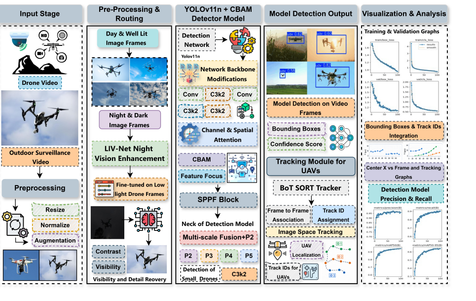
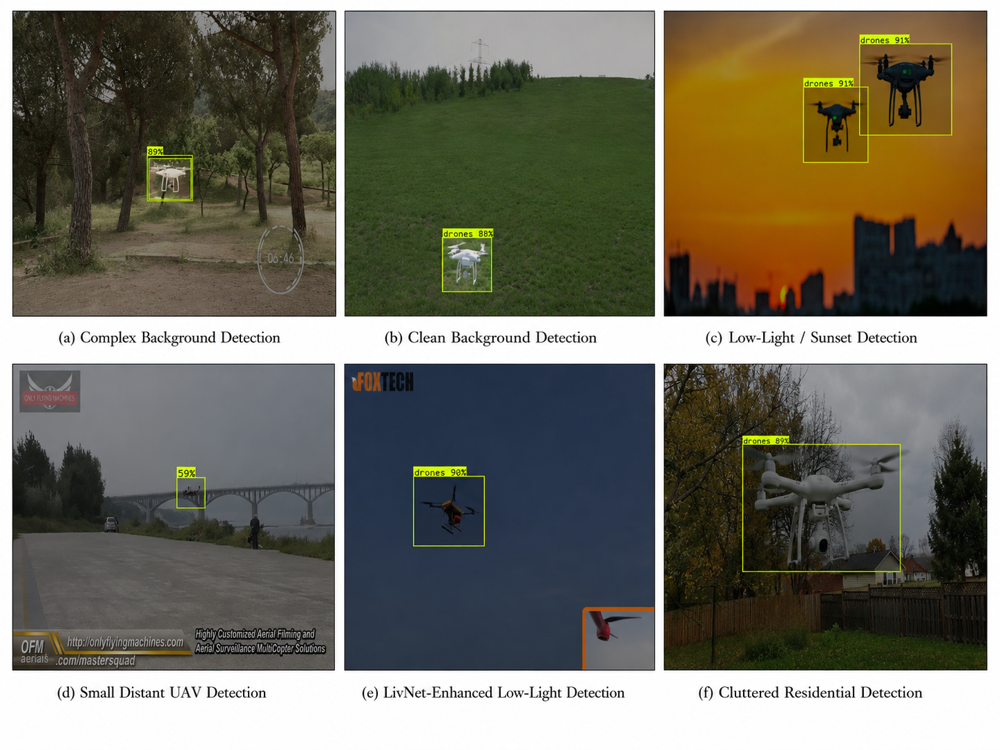
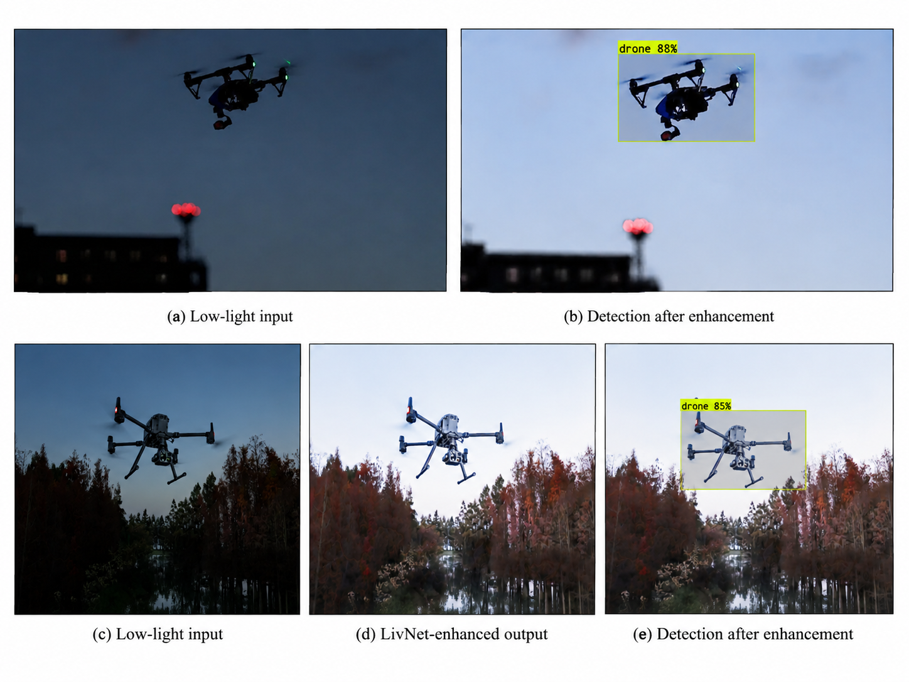
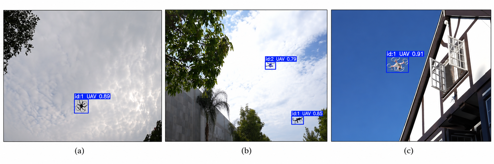
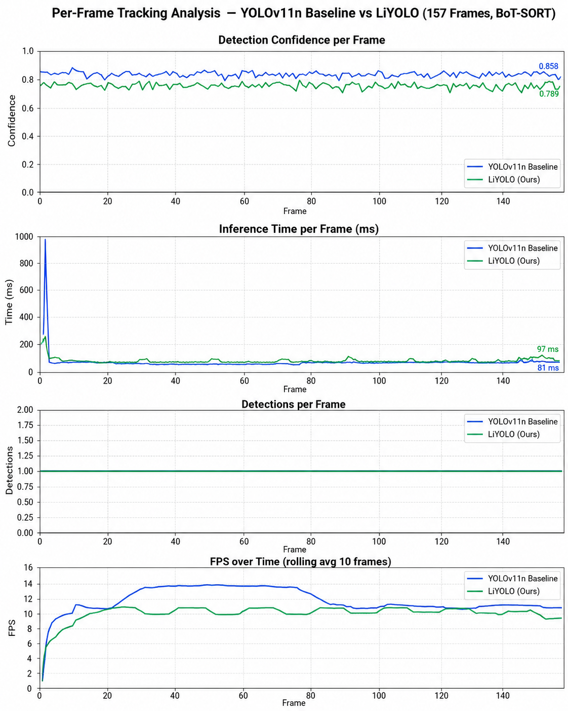

CAIM RESEARCH PROJECT
Department of Electronics and Information Engineering,
Jeonbuk National University, Jeonju, Republic of Korea
School of Mechanical Design Engineering,
Jeonbuk National University, Jeonju, Republic of Korea
Center for Autonomous Intelligence and e-Mobility (CAIM)
,
Jeonbuk National University, Jeonju, Republic of Korea
The rapid proliferation of unmanned aerial vehicles (UAVs) in both civilian and restricted airspace poses significant security challenges, particularly in complex environments and low-light conditions where conventional detection systems fail to perform reliably. This paper proposes a comprehensive anti-drone surveillance framework with three key contributions. First, we present a CBAM-augmented YOLOv11n architecture that integrates the Convolutional Block Attention Module (CBAM) at every backbone stage, allowing the model to selectively focus on drone-relevant features while suppressing background clutter caused by trees, buildings, and complex textures. Second, to address the detection of small and low-altitude drones, an additional P2 detection head operating at 160 × 160 spatial resolution is introduced alongside the standard multi-scale heads, significantly improving sensitivity toward tiny drone instances. Third, a night vision enhancement stage based on LIVENet, fine-tuned on drone-specific imagery, is integrated as a preprocessing module to improve low-light and nighttime frames before detection.
The enhanced detection pipeline is further coupled with BoT-SORT for robust multi-object tracking, providing stable and continuous drone trajectory estimation with zero identity switches across test sequences. Experimental results demonstrate an mAP@0.5 of 0.985, mAP@0.5:0.95 of 0.745, precision of 0.985, and recall of 0.962, outperforming YOLOv5n, YOLOv6n, YOLOv8n, YOLOv9n, YOLOv10n, and the YOLOv11n baseline.
mAP@0.5
mAP@0.5:0.95
Precision
Recall
FPS
LiYOLO achieves the best overall detection performance among the evaluated lightweight YOLO models while maintaining a compact 2.7M-parameter architecture suitable for real-time anti-drone surveillance.
LiYOLO-Track combines illumination-aware preprocessing, LivNet-based low-light enhancement, the proposed LiYOLO detector, and BoT-SORT tracking within a unified day–night anti-drone surveillance pipeline.

CBAM modules are inserted after C3k2 blocks in the YOLOv11n backbone to emphasize UAV-relevant channel and spatial features while suppressing complex background clutter.
An additional P2 head operating at 160 × 160 resolution preserves high-resolution spatial information for detecting small and distant UAVs.
Low-light and nighttime frames are selectively enhanced using a drone-specific fine-tuned LivNet model before UAV detection.
BoT-SORT associates UAV detections across consecutive frames and assigns persistent track IDs for continuous video-level monitoring.
LiYOLO was compared with six lightweight YOLO detectors under the same experimental conditions. The proposed model achieves the best overall detection accuracy while maintaining real-time inference.
| Model | mAP@0.5 | mAP@0.5:0.95 | Precision | Recall | FPS | Params (M) |
|---|---|---|---|---|---|---|
| YOLOv5n | 0.822 | 0.512 | 0.912 | 0.820 | 45.2 | 4.1 |
| YOLOv6n | 0.832 | 0.533 | 0.938 | 0.823 | 55.0 | 3.8 |
| YOLOv8n | 0.843 | 0.542 | 0.933 | 0.813 | 64.7 | 3.5 |
| YOLOv9n | 0.892 | 0.526 | 0.922 | 0.832 | 57.3 | 2.9 |
| YOLOv10n | 0.813 | 0.500 | 0.934 | 0.854 | 62.0 | 2.7 |
| YOLOv11n | 0.957 | 0.707 | 0.957 | 0.945 | 52.0 | 2.6 |
| LiYOLO | 0.985 | 0.745 | 0.985 | 0.962 | 92.5 | 2.7 |
The ablation study evaluates the individual and combined effects of CBAM attention and the additional P2 detection head in the proposed LiYOLO detector.
| Model | CBAM | P2 | mAP@0.5 | mAP@0.5:0.95 | Precision | Recall |
|---|---|---|---|---|---|---|
| Baseline YOLOv11n | ✗ | ✗ | 0.957 | 0.707 | 0.957 | 0.945 |
| CBAM only | ✓ | ✗ | 0.831 | 0.487 | 0.942 | 0.769 |
| P2 only | ✗ | ✓ | 0.868 | 0.537 | 0.946 | 0.810 |
| LiYOLO (CBAM + P2) | ✓ | ✓ | 0.985 | 0.745 | 0.985 | 0.962 |
LiYOLO is evaluated under diverse surveillance conditions including complex natural backgrounds, clean open scenes, low-light sunset conditions, small distant UAV targets, LivNet-enhanced low-light inputs, and cluttered residential environments.

Nighttime and low-light frames are selectively routed through the fine-tuned LivNet enhancement module before UAV detection. The enhancement stage improves scene brightness, local contrast, and target visibility while preserving UAV structures required for reliable localization.

After UAV detection, BoT-SORT performs frame-to-frame association and assigns persistent track IDs to detected drones. This enables continuous video-level monitoring and preserves UAV identity across consecutive frames in both single-target and multi-target surveillance scenarios.

The temporal behavior of LiYOLO-Track is evaluated over a 157-frame UAV video sequence. The analysis compares the YOLOv11n baseline and the proposed LiYOLO detector in terms of detection confidence, inference time, detections per frame, and FPS during BoT-SORT tracking.

DUT Anti-UAV
5,243 UAV instances640 × 640
YOLO detection input100 Epochs
Batch size 8 · AdamWRTX 3060
12 GB VRAM50 Epochs
723 drone-oriented paired imagesBoT-SORT
Default Ultralytics configurationLiYOLO-Track provides a lightweight and real-time framework for day–night anti-drone detection and ID-based UAV tracking. The system integrates LivNet-based low-light enhancement, a modified YOLOv11n detector with CBAM attention and a high-resolution P2 detection head, and BoT-SORT tracking within a unified surveillance pipeline.
Experimental evaluation demonstrates strong detection performance, achieving an mAP@0.5 of 0.985, mAP@0.5:0.95 of 0.745, precision of 0.985, recall of 0.962, and 92.5 FPS while maintaining a compact 2.7M-parameter model. Qualitative experiments further show reliable operation across complex natural scenes, cluttered environments, small distant UAV targets, and low-light conditions. Together with persistent ID-based tracking, the framework extends image-level UAV detection toward continuous video-level anti-drone surveillance.
Future work will focus on extending LiYOLO-Track toward more challenging real-world anti-drone surveillance scenarios. Planned directions include evaluating the framework under denser multi-UAV conditions, stronger illumination changes, adverse weather, severe occlusion, and longer surveillance sequences.
Further development will also investigate improved temporal association, more efficient edge deployment, and broader validation on additional anti-drone datasets. These extensions aim to strengthen the robustness and practical applicability of LiYOLO-Track for continuous real-time UAV surveillance.
Jeonbuk National University · Center for Autonomous Intelligence and e-Mobility (CAIM)
Research Manuscript